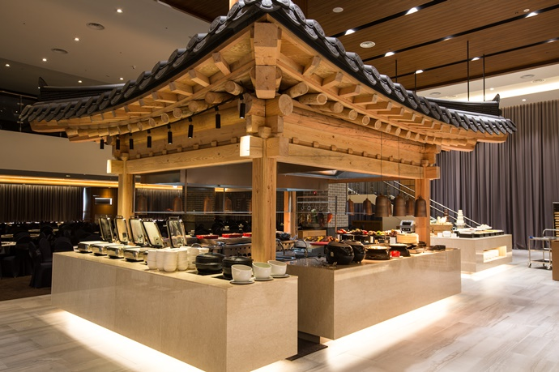
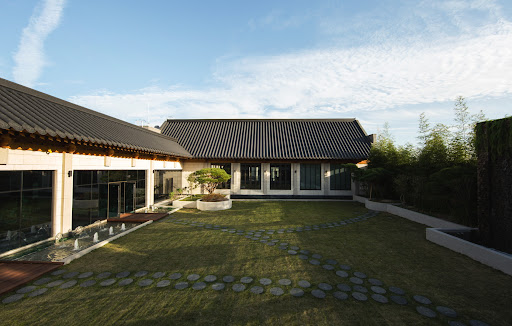
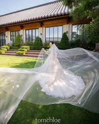
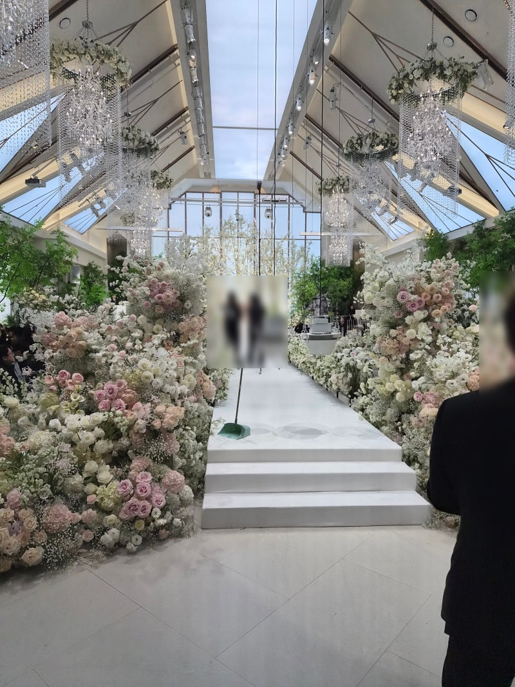
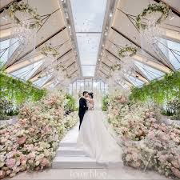

A message for our beloved family사랑하는 가족에게Pesan untuk keluarga tercinta kami
Planning to Get Married in May or June 20272027년 5월 또는 6월 결혼 예정Berencana Menikah pada Mei atau Juni 2027
Seoul, Korea · and Indonesia, in the Church서울, 한국 · 그리고 인도네시아 성당에서Seoul, Korea · dan Indonesia, di Gereja
We made this page just for you — so you can follow our journey and feel close to us every step of the way. We love you so much. 💛이 페이지는 여러분을 위해 만들었어요. 우리의 여정을 함께 따라오실 수 있도록. 많이 사랑해요. 💛Kami membuat halaman ini khusus untuk keluarga kami — agar bisa mengikuti perjalanan kami. We love you all so much 💛
We are planning two celebrations and preparing our first home together — everything is moving at once, and we want you to be part of every step.
Wedding 1 · Korea
Korean Ceremony
A modern Korean-style ceremony in Seoul. We are deciding between May 23 and June 13, 2027 — the date affects the venue pricing, and the total cost falls between 20–30M KRW (around Rp 220–330 million). We want to make a thoughtful choice we won't regret.
Wedding 2 · Indonesia
Catholic Church Ceremony
Once Jin's baptism and Catholic marriage preparation are completed in November 2026, we are thinking it would be nice to hold the Indonesian ceremony sometime before the Korean wedding (May/June 2027). We are planning a Mass at Nad's high school chapel, followed by a nice Indonesian reception dinner — intimate, meaningful, and truly ours. 🙏
Our New Home
Finding a Place to Begin
Nad's current lease ends in March 2027, so we are actively looking for our first home together in Seoul. We are considering buying (up to 900M KRW / around Rp 10 billion) or renting on a long-term jeonse contract (500–600M KRW / around Rp 5.5–6.5 billion). There is a lot to consider — investment value, neighborhood, visiting properties in person — a very complicated and hard decision, and we talk about it every single day. 🏠
Two weddings, a new home, a car, tax — preparing for all of this at once has shown us how quickly costs add up. We have made a conscious decision: rather than going as big or as lavish as possible, we want to spend thoughtfully and make choices we truly won't regret. Meaningful over extravagant — that feels right for us. 💛
The full timeline based on this plan is at the bottom of the page ↓
View Full Timeline →한국과 인도네시아 두 곳에서 결혼식을 계획하고, 동시에 신혼집도 알아보고 있어요.
결혼식 1 · 한국
한국 결혼식
서울에서 진행 예정. 2027년 5월 23일 또는 6월 13일 중 고민 중이에요 — 날짜에 따라 예식장 가격이 달라져서, 신중하게 결정하고 있어요. 견적은 2,000~3,000만 원 사이예요.
결혼식 2 · 인도네시아
천주교 성당 결혼식
진혁이 세례와 혼인교리를 2026년 11월에 마무리하면, 한국 결혼식(5월/6월 2027) 전에 진행할 수 있으면 좋겠다고 생각하고 있어요. Nad 고등학교 kapel에서 미사 후, 인도네시아식 근사한 식사를 함께할 예정이에요. 🙏
신혼집
함께 살 집 알아보는 중
Nad의 현재 집 계약이 2027년 3월에 만기라, 신혼집으로 이사할 준비 중이에요. 매매 9억 이하 또는 전세 5~6억 선으로 서울 내에서 알아보고 있어요. 매일 둘이 이야기하며 함께 결정해 나가고 있어요. 🏠
두번의 결혼식, 신혼집, 차, 스드메까지 — 준비하면서 생각보다 돈이 많이 필요하다는 걸 실감하고 있어요. 그래서 우리는 무조건 크고 화려하게 하기보다, 적당한 선에서 후회 없는 선택을 하자는 마음으로 하나씩 결정해 나가고 있어요. 💛
이 플랜대로의 타임라인은 페이지 맨 밑에 있어요 ↓
타임라인 보기 →Kami merencanakan dua perayaan dan mempersiapkan rumah pertama kami — semuanya berjalan sekaligus.
Pernikahan 1 · Korea
Upacara Korea
Upacara gaya Korea modern di Seoul. Kami memilih antara 23 Mei atau 13 Juni 2027 — tanggalnya mempengaruhi harga venue, dan total biayanya sekitar 20–30 juta KRW (sekitar Rp 220–330 juta). Kami ingin membuat pilihan yang bijak dan tidak menyesal.
Pernikahan 2 · Indonesia
Pernikahan Gereja Katolik
Setelah baptis Jin dan persiapan pernikahan Katolik selesai di November 2026, kami pikir akan menyenangkan jika pernikahan Indonesia bisa dilakukan sebelum pernikahan Korea (Mei/Juni 2027). Rencananya Misa di kapel SMA Nad, lalu makan malam Indonesia yang hangat bersama keluarga. 🙏
Rumah Baru Kami
Mencari Tempat untuk Memulai
Kontrak sewa Nad berakhir Maret 2027, jadi kami sedang aktif mencari rumah pertama di Seoul. Kami mempertimbangkan membeli (hingga 900 juta KRW / sekitar Rp 10 miliar) atau menyewa jangka panjang (500–600 juta KRW / sekitar Rp 5,5–6,5 miliar). Hal yang sangat ribet dan sulit, dan kami membicarakannya setiap hari. 🏠
Dua acara pernikahan, rumah, mobil, pajak — mempersiapkan semua ini sekaligus membuat kami sadar betapa cepatnya biaya bertambah. Kami telah memutuskan: daripada semewah atau sebesar mungkin, kami ingin memilih dengan bijak dan membuat keputusan yang benar-benar tidak kami sesali. Bermakna lebih penting dari mewah — itu terasa benar bagi kami. 💛
Timeline lengkap berdasarkan rencana ini ada di paling bawah halaman ↓
Lihat Timeline →Comparing with an Indonesian wedding, a Korean one will feel a little different — not better or worse, just its own thing. Here is a quick side-by-side to help it feel familiar before the big day.
What you know
Indonesian Wedding
What to expect
Korean Wedding
① Early Preparation
Before Everything Begins
The first big task is booking the wedding hall (예식장) — usually done 12–18 months ahead. After that, a wedding planner is hired to coordinate vendors. Together, the couple goes on a 스드메 tour (studio photography, dress, and makeup), shops for wedding rings, and begins the long search for their first home together.
② 상견례 · Sanggyeonrye
First Family Meeting
A formal dinner where both families meet for the first time — this is a big moment in Korean wedding culture. More details in the next section.
③ Wedding Preparation
Getting Everything Ready
A few months before the wedding: the professional photo shoot (스튜디오 촬영), both families getting fitted for their Hanbok (traditional dress), the groom organizing his tuxedo, and final dress fittings for the bride.
④ The Wedding Day
Ceremony + Dinner
The ceremony lasts about 30 minutes — focused and elegant by design (see the ceremony order below). Right after, everyone moves to a generous buffet dinner where the real celebration happens.
Korean ceremonies are short but meaningful — every moment counts. Here is what happens, step by step.
한국 결혼식은 크게 네 가지 구성으로 이루어져 있어요.
① 사전 준비
결혼 준비의 시작
예식장 예약 (보통 1년~1년 반 전), 웨딩 플래너 계약 후 플래너와 함께 스드메(스튜디오·드레스·메이크업) 투어를 다녀요. 그 외에도 결혼반지 쇼핑, 신혼집 알아보기 등 할 일이 꽤 많아요.
② 상견례
양가 첫 만남
양가 가족이 처음으로 공식적으로 만나는 자리예요. 한국 결혼 문화에서 매우 중요한 순간이에요. 다음 섹션에서 자세히 설명할게요.
③ 결혼 준비
결혼식 직전 준비
결혼식 몇 달 전에 스튜디오 촬영을 하고, 양가 부모님 한복을 맞추고, 신랑은 턱시도를 준비해요. 신부도 드레스 최종 피팅을 하고요.
④ 결혼식 당일
예식 + 피로연
예식은 보통 약 30분이에요. 짧지만 의미 있는 시간이에요 (아래 예식 순서 참고). 예식이 끝나면 모두 뷔페 식사 자리로 이동해서 본격적인 축하가 시작돼요.
짧지만 의미 있는 시간이에요. 순서를 미리 알아두시면 더 편안하게 느끼실 수 있어요.
Jika dibandingkan dengan pernikahan Indonesia, pernikahan Korea akan terasa sedikit berbeda — bukan lebih baik atau lebih buruk, hanya caranya sendiri. Berikut perbandingannya agar tidak ada kejutan.
Yang sudah dikenal
Pernikahan Indonesia
Yang akan disaksikan
Pernikahan Korea
① Persiapan Awal
Sebelum Semua Dimulai
Langkah pertama adalah memesan gedung pernikahan (예식장) — biasanya 12–18 bulan sebelumnya. Setelah itu, wedding planner dikontrak untuk membantu koordinasi. Bersama planner, pasangan melakukan tur 스드메 (studio foto, gaun, makeup), berbelanja cincin pernikahan, dan mulai mencari rumah pertama bersama.
② 상견례 · Sanggyeonrye
Pertemuan Pertama Keluarga
Makan malam resmi di mana kedua keluarga bertemu untuk pertama kalinya — momen penting dalam budaya pernikahan Korea. Detail lebih lanjut ada di bagian berikutnya.
③ Persiapan Pernikahan
Mempersiapkan Segalanya
Beberapa bulan sebelum hari H: sesi foto profesional (스튜디오 촬영), fitting Hanbok untuk kedua keluarga, pengantin pria menyiapkan tuksedo, dan fitting gaun terakhir untuk pengantin wanita.
④ Hari Pernikahan
Upacara + Makan Malam
Upacara berlangsung sekitar 30 menit — singkat tapi penuh makna (lihat urutan upacara di bawah). Setelah itu semua tamu menikmati makan malam bersama — di sinilah perayaan sesungguhnya dimulai.
Singkat tapi penuh makna — setiap momen berarti. Berikut yang akan terjadi.
We have chosen the Sky Garden Hall (하늘정원) at Ramada Seoul Sindorim Hotel — on the 14th floor, with a private garden right beside the bridal suite. We are currently deciding between our two date options, as pricing varies by date within the 20–30M KRW (Rp 220–330 million) range. We will let you know when we make our decision!
📸 See photos on Instagram → #하늘정원홀




Why we chose this hall
Nad's original dream was a hanok (traditional Korean house) wedding — open air, surrounded by wooden architecture and nature. Hanok venues are truly beautiful, but they turned out to be far outside our budget, very difficult to book, and only available in certain seasons. We had to let that dream go. The Sky Garden Hall is our practical answer. The reception restaurant actually features a traditional hanok-style pavilion structure right in the center of the dining hall — wooden beams, curved roof tiles and all. And the garden just outside the bridal suite has Korean traditional architecture and stepping stones through a green lawn. It's not what we first imagined, but it genuinely has the feeling we were looking for, at a price that makes sense for us. ✨
라마다 서울 신도림 호텔 14층 하늘정원홀을 선택했어요. 두 날짜 중 어느 날로 할지 고민 중인데, 날짜마다 가격이 달라서 신중하게 결정하고 있어요. 견적은 2,000~3,000만 원 사이예요. 날짜 확정되면 바로 계약할 예정이에요!
📸 인스타그램에서 사진 보기 → #하늘정원홀이 홀을 선택한 이유
원래 로망은 한옥 결혼식이었어요. 자연 속에서, 나무 건물에 둘러싸여 하는 결혼식을 꿈꿨는데 — 막상 알아보니 가격이 현실적으로 너무 벅차고, 예약 자체가 어렵고, 야외라 계절도 많이 탔어요. 결국 포기할 수밖에 없었어요. 하늘정원홀은 그 다음으로 고른 현실적인 선택이에요. 연회장 한가운데 한옥 정자 구조물이 실제로 있어요 — 나무 기둥에 기와지붕까지요. 그리고 신부대기실 바로 앞 정원은 한국 전통 건축 양식에 디딤돌이 깔린 잔디마당이에요. 처음 꿈꿨던 모습은 아니지만, 원하던 감성을 현실적인 가격에 찾은 느낌이었어요. ✨
Kami telah memilih Sky Garden Hall (하늘정원) di Ramada Seoul Sindorim Hotel — lantai 14, dengan taman pribadi di samping ruang pengantin. Kami sedang memilih antara dua tanggal karena harganya berbeda, dalam kisaran 20–30 juta KRW (sekitar Rp 220–330 juta). Nanti kita kabari kalau sudah dikonfirmasi!
📸 Lihat foto di Instagram → #하늘정원홀Mengapa kami memilih aula ini
Impian awal Nad adalah pernikahan di hanok — di luar ruangan, dikelilingi arsitektur kayu tradisional Korea. Tapi setelah kami cari tahu, harganya jauh di luar anggaran kami, sangat sulit dipesan, dan hanya tersedia di musim tertentu. Akhirnya kami harus melepaskan impian itu. Sky Garden Hall adalah pilihan praktis kami. Restoran resepsi memiliki struktur pavilion bergaya hanok di tengah ruangan — lengkap dengan balok kayu dan genteng melengkung. Dan taman di luar ruang pengantin memiliki arsitektur tradisional Korea dengan batu loncatan di padang rumput hijau. Bukan yang pertama kami bayangkan, tapi benar-benar memiliki nuansa yang kami cari, dengan harga yang masuk akal untuk kami. ✨
This is one of the most important pre-wedding moments, and one we want to be open and honest with you about.
What is Sanggyeonrye?
상견례 — When Both Families First Meet
Sanggyeonrye is a formal dinner where the groom's family and bride's family meet for the very first time — warmly, respectfully, sharing a meal and talking about the wedding. Sanggyeonrye carries a very similar spirit to the Javanese Lamaran — both are rooted in the belief that marriage begins with two families meeting, honoring each other, and starting the journey together. The difference is that Sanggyeonrye is less about who travels to whom, and more about the act of sitting at the same table for the first time. The meaning lives in that shared meal, wherever it takes place.
We want to be fully transparent. If the Sanggyeonrye were held in Indonesia, everyone below would need to travel — all of them working full-time, all needing to take days off:
Nad & Jin · Jin's parents · Jin's sister & her husband · Nad's sister
That's seven people flying internationally. Round-trip flights from Seoul to Jakarta cost around 800,000–1,000,000 KRW per person (roughly Rp 9–11 million each), plus hotels near home at around 100,000 KRW per night (around Rp 1 million). For the whole group, the total becomes several times more than if just the two of you visited Seoul.
We understand the tradition, and we respect it deeply. We only hope you can also see the reality we are navigating — and that your coming to Seoul is not a lesser choice, but a genuinely loving one that makes it possible for everyone to be together.
And if you do come to Seoul — we want it to be so much more than just a dinner. We'd love to take you apartment hunting with us, bring you along when Nad tries on wedding dresses, and go to Hanbok fitting together. These quiet, everyday moments are the ones we most want to share with you — the whole journey, not just the ceremony itself. 🤍
Ibu's Suggestion: Sanggyeonrye over video call
We truly appreciate the thought. But Sanggyeonrye carries meaning precisely because it is in-person — meeting face to face, sitting at the same table, sharing food is what makes it real. A video call cannot carry that same weight for. It would feel as though the meeting never truly happened. Jin's mother in particular felt a video call cannot carry that same weight as the Sanggyeonrye.
Ibu's Suggestion: Meet a few days before the Indonesian wedding instead
The whole point of Sanggyeonrye is that it happens *before* the wedding journey begins — it is the starting point, not a footnote at the end. Meeting for the first time a few days before the Indonesian ceremony would mean our families are already in the middle of wedding events when they first say hello. There would be no time to truly get to know each other, and the meaning of the meeting would be lost.
A thought we'd like to share
We've been thinking about this, and we wonder if there might be a middle ground. What if Ibu/Bapak came to Seoul — and instead of us all going to a restaurant together as one group, Jin's parents came to a restaurant in our part of the city, closer to where we're staying? That way, the groom's family is still coming toward the bride's side, which honors the spirit of what you're hoping for. It's just a thought, and we are trying hard to find whatever feels right for everyone. 🤍
We know this is not how you imagined it, and your feelings matter to us more than you know. We are not asking you to agree right away — only to know that every decision we've made comes from love, and a deep wish to honor both families. You are always at the center of everything we plan. 💛
결혼 전 가장 중요한 순간 중 하나예요. 솔직하게 이야기 드리고 싶어요.
상견례란?
양가 가족의 첫 공식 만남
상견례는 신랑 가족과 신부 가족이 처음으로 공식적으로 만나는 자리예요. 상견례는 자바 전통의 라마란(Lamaran)과 비슷한 정신을 담고 있어요 — 두 문화 모두 결혼은 두 가족이 먼저 만나 서로를 존중하며 함께 시작하는 여정이라는 믿음에 뿌리를 두고 있어요. 다만 상견례는 누가 누구를 찾아가느냐보다, 처음으로 같은 자리에 앉아 함께 식사한다는 것 자체에 의미가 있어요. 그 만남이 어디서 이루어지든, 함께한다는 사실이 핵심이에요.
솔직하게 말씀드릴게요. 인도네시아에서 상견례를 하게 되면, 아래 분들이 모두 비행기를 타야 해요 — 모두 직장인이라 휴가도 써야 해요:
Nad & 진혁 · 진혁 부모님 · 진혁 누나 & 매형 · Nad 언니
총 7명이 국제선을 타야 해요. 서울-자카르타 왕복 항공권이 1인당 80~100만 원(약 Rp 900만~1,100만), 인근 호텔도 1박에 약 10만 원(약 Rp 110만)이에요. 7명이 모두 오는 비용은 두 분만 서울에 오시는 것보다 몇 배나 더 커요.
전통을 소중히 여기신다는 거 알아요. 다만, 저희가 처한 현실도 함께 이해해 주셨으면 해요.
그리고 서울에 오신다면 — 단순히 저녁 식사 이상의 시간을 함께하고 싶어요. 신혼집 임장도 같이 다니고, 드레스 보러 갈 때도 함께하고, 한복 피팅도 경험해보셨으면 해요. 그 소소하고 일상적인 순간들이 저희가 가장 나누고 싶은 시간이에요 — 결혼식 당일뿐만 아니라, 그 여정 전체를. 🤍
받은 제안: 화상통화(줌)로 상견례
마음은 정말 감사해요. 하지만 상견례는 직접 만나 같은 자리에서 밥을 먹는 것 자체에 의미가 있어요. 진혁이 가족에게 화상통화는 '만난 것'으로 받아들여지기 어려워요. 특히 진혁이 어머니께서 이 부분을 많이 걱정하셨어요.
받은 제안: 인도네시아 결혼식 며칠 전에 만나는 것
상견례의 본질은 결혼이 본격적으로 시작되기 *전에* 만나는 거예요 — 시작점이어야 해요. 인도네시아 결혼식 며칠 전에 처음 만난다면, 이미 결혼 일정 한가운데서 인사를 나누는 셈이에요. 제대로 알아갈 시간도 없고, 상견례 본래의 의미도 사라져요. 상견례는 결혼식과 분리된, 여유 있고 따뜻한 자리여야 해요.
하나 더 생각해본 것
사실 이런 생각도 해봤어요. 서울로 오시되, 진혁이 부모님이 엄마아빠가 머무는 쪽 근처 식당으로 오시는 건 어떨까요? 그러면 남자 쪽에서 여자 쪽으로 찾아온다는 의미는 살릴 수 있어요. 그냥 살짝 떠올려본 아이디어예요, 어떤 방식이든 다 같이 이야기해봐요. 🤍
생각하신 것과 다를 수 있다는 거 알아요. 당장 동의하지 않으셔도 괜찮아요 — 다만, 저희가 내리는 모든 결정이 사랑과 현실적인 고민에서 나온다는 것만 알아주세요. 💛
Ini salah satu momen pra-pernikahan terpenting, dan kami ingin terbuka dan jujur dengan keluarga.
Apa itu Sanggyeonrye?
Pertemuan Pertama Kedua Keluarga
Sanggyeonrye adalah makan malam resmi di mana keluarga pengantin pria dan wanita bertemu untuk pertama kalinya — hangat, penuh hormat, berbagi makanan dan membicarakan pernikahan yang akan datang. Sanggyeonrye memiliki semangat yang sangat mirip dengan Lamaran dalam adat Jawa — keduanya berakar pada keyakinan bahwa pernikahan dimulai dengan dua keluarga yang bertemu, saling menghormati, dan memulai perjalanan bersama. Bedanya, Sanggyeonrye lebih menekankan pada tindakan duduk di meja yang sama untuk pertama kalinya, daripada siapa yang melakukan perjalanan ke siapa. Maknanya ada pada pertemuan itu sendiri — di mana pun itu terjadi.
Kami ingin sepenuhnya transparan. Jika Sanggyeonrye diadakan di Indonesia, semua orang di bawah ini harus melakukan perjalanan — semuanya bekerja penuh waktu, semuanya harus mengambil cuti:
Nad & Jin · Orang tua Jin · Kakak perempuan Jin & suaminya · Adik Nad
Itu tujuh orang yang harus terbang internasional. Tiket pesawat pulang-pergi Seoul–Jakarta sekitar 800.000–1.000.000 KRW per orang (sekitar Rp 9–11 juta), ditambah hotel dekat rumah kita sekitar 100.000 KRW per malam (sekitar Rp 1,1 juta). Untuk seluruh kelompok, totalnya jauh lebih besar dibandingkan jika hanya Ibu/Bapak berdua yang mengunjungi Seoul.
Kami menghormati tradisi Indonesia sepenuhnya. Kami hanya berharap Ibu/Bapak juga bisa melihat realitas yang kami hadapi.
Dan jika Ibu/Bapak datang ke Seoul — kami ingin itu menjadi jauh lebih dari sekadar makan malam. Kami ingin mengajak berburu apartemen, menemani Nad mencoba gaun pernikahan, dan fitting Hanbok bersama. Momen-momen kecil inilah yang paling ingin kami bagikan — seluruh perjalanan, bukan hanya upacara itu sendiri. 🤍
Saran: Sanggyeonrye lewat video call
Kami menghargai pemikirannya. Tapi Sanggyeonrye bermakna justru karena dilakukan secara langsung — bertemu, duduk di meja yang sama, berbagi makanan itulah yang membuatnya nyata. Ibu Jin khususnya sangat keberatan dengan ini.
Saran: Bertemu beberapa hari sebelum pernikahan Indonesia
Inti dari Sanggyeonrye adalah bahwa pertemuan itu terjadi *sebelum* perjalanan pernikahan dimulai — bukan di tengah atau di ujungnya. Bertemu untuk pertama kali beberapa hari sebelum upacara Indonesia berarti keluarga kami sudah berada di tengah acara pernikahan saat pertama kali berjabat tangan. Tidak ada waktu untuk benar-benar saling mengenal, dan makna pertemuan itu pun hilang.
Satu pemikiran yang ingin kami bagikan
Kami juga memikirkan kemungkinan lain. Bagaimana jika Ibu/Bapak datang ke Seoul — dan orang tua Jin yang datang ke restoran di area kita menginap, lebih dekat ke pihak kita? Dengan begitu, pihak pria tetap yang mendatangi pihak wanita, yang menghormati budaya dari apa yang kalian harapkan. Ini hanya sebuah pemikiran kecil, dan kami terbuka untuk mencari yang terasa baik bagi semua pihak. 🤍
Kami tahu ini mungkin bukan yang kalian bayangkan. Kami tidak meminta Ibu/Bapak untuk langsung setuju — hanya ingin Ibu/Bapak tahu bahwa setiap keputusan datang dari cinta dan keinginan tulus untuk menghormati kedua keluarga. 💛
Jin is getting baptized in November 2026, and after that we'll do the Catholic marriage prep together. Once that's all done, we're planning a Mass at Nad's high school chapel in Indonesia, followed by dinner with family. 🙏
November 1, 2026
Jin's Baptism
Jinhyeok will be baptized on All Saints' Day — a sincere and joyful commitment to our faith and our future.
November 2026
Marriage Preparation
We will attend Catholic marriage preparation classes (혼인교리) together — required before a Catholic wedding.
2026–2027 · Indonesia
Catholic Church Wedding — for You
Once Jin's baptism and marriage prep classes are complete in November 2026, we are thinking it would be nice to hold the Indonesian ceremony sometime before the Korean wedding. The plan: a Mass at Nad's high school chapel, followed by a warm Indonesian reception dinner — intimate, faithful, and truly ours. 🙏
💭 What we also looked into
Nad honestly dreamed of a Bali wedding — and we did look into it seriously. We even reviewed Tirtha Bali's Catholic wedding package. But when we factored in flights and accommodation for two families plus close friends, it quickly became impractical. A chapel we love and a beautiful dinner together feels much more right.
A note from Nad: I know how deeply important our faith is to you, and it is to me too. Having Jin receive baptism, and preparing together through the Church — it really means something for me. Thank you for raising me in a home full of faith. The church wedding is for this family. 🤍
진혁이 2026년 11월에 세례를 받고, 그 후 혼인교리를 함께 마칠 예정이에요. 준비가 다 되면 인도네시아 Nad 고등학교 kapel에서 미사를 드리고, 가족들과 밥 먹을 거예요. 🙏
2026년 11월 1일
진혁 세례
모든 성인 대축일에 세례를 받을 예정이에요.
2026년 11월
혼인교리
성당 결혼식 전 필수 과정인 혼인교리를 함께 받을 예정이에요.
2026–2027년 · 인도네시아
성당 결혼식 — 가족을 위해
2026년 11월에 세례와 혼인교리가 마무리되면, 한국 결혼식 전에 할 수 있으면 좋겠다고 생각하고 있어요. Nad 고등학교 kapel에서 미사를 드리고, 그 후 인도네시아식 근사한 식사를 함께할 예정이에요. 🙏
💭 검토했던 것들
Nad는 발리 결혼식을 꿈꿔왔고, 실제로 진지하게 알아봤어요. Tirtha Bali의 가톨릭 웨딩 패키지도 검토했고요. 하지만 양가 가족과 지인들의 항공편, 숙박까지 고려하면 현실적으로 거의 불가능한 수준이라 판단했어요. 우리가 사랑하는 kapel에서 함께하는 게 훨씬 더 의미 있을 것 같아요.
Nad의 마음: 엄마아빠에게 신앙이 얼마나 중요한지 알아요. 저도 마찬가지예요. 신앙이 있는 가정에서 키워주셔서 감사해요. 성당 결혼식은 여러분을 위한 거예요. 🤍
Jin akan dibaptis November 2026, lalu kami menyelesaikan persiapan pernikahan Katolik bersama. Setelah semuanya selesai, rencananya Misa di kapel SMA Nad di Indonesia, lalu makan malam bersama keluarga. 🙏
1 November 2026
Baptis Jin
Jinhyeok akan dibaptis pada Hari Semua Orang Kudus.
November 2026
Persiapan Pernikahan
Kami akan mengikuti kelas persiapan pernikahan Katolik bersama — diwajibkan sebelum pernikahan Katolik.
2026–2027 · Indonesia
Pernikahan Gereja Katolik — Untuk Ibu/Bapak
Setelah baptis dan persiapan pernikahan selesai di November 2026, kami pikir akan menyenangkan jika pernikahan Indonesia bisa dilakukan sebelum pernikahan Korea. Rencananya: Misa di kapel SMA Nad, lalu makan malam Indonesia yang hangat bersama keluarga. 🙏
💭 Yang sudah kami pertimbangkan
Nad sejujurnya bermimpi tentang pernikahan di Bali — dan kami benar-benar mempertimbangkannya dengan serius. Kami bahkan meninjau paket pernikahan Katolik Tirtha Bali. Tapi setelah mempertimbangkan tiket pesawat dan akomodasi untuk kedua keluarga ditambah kerabat dekat, biayanya menjadi tidak masuk akal. Kapel yang kami cintai dan makan malam bersama terasa jauh lebih tepat.
Pesan dari Nad: Aku tahu betapa pentingnya iman kita. Melihat Jin dibaptis dan menjalani persiapan Gereja bersama — itu sangat berarti. Terima kasih telah membesarkan aku dalam rumah yang penuh iman. Pernikahan gereja ini untuk keluarga Nad 🤍
A look at our journey from start to finish — we'll keep this updated as things get confirmed.
Venue research, apartment hunting, and making this page for you. 💛
Actively visiting properties in Seoul. Aiming to move in March 2027.
Signing the contract for Sky Garden Hall — confirming May 23 or June 13, 2027.
Meeting planners and finalizing our choice. Need to wrap this up by end of June 2026.
Studio, dress, and makeup tours — the 스드메 journey begins.
We hope to hold the first family meeting dinner in June or July — ideally timed so the dress tour and family visit can overlap. 🤍
Finding and confirming the chapel (Nad's high school kapel), the Romo, and the restaurant for the reception dinner. Needs to be settled before baptism and marriage prep begin.
Jin receives baptism on All Saints' Day (Nov 1), then we attend 혼인교리 together — both required before the church wedding.
Mass at Nad's high school chapel, followed by an Indonesian dinner reception. Ideally it would happen sometime before the Korean wedding — exact date TBD once things are confirmed.
Nad's lease ends — we move into our first home together!
Our ceremony at Sky Garden Hall, Ramada Seoul Sindorim. We cannot wait.
Destination TBD — but we are dreaming about it already.
시작부터 끝까지 — 확정될 때마다 계속 업데이트할게요.
예식장 알아보고, 신혼집도 보러 다니고, 이 페이지도 만들었어요. 💛
서울 곳곳 매물을 보러 다니고 있어요. 2027년 3월 이사 목표예요.
라마다 서울 신도림 하늘정원홀 계약 및 날짜 확정 — 5월 23일 또는 6월 13일, 2027.
여러 플래너를 만나보고 있어요. 6월 안으로 마무리해야 해요.
스튜디오·드레스·메이크업 투어 — 본격 준비 시작!
6~7월 중에 진행하면 드레스 투어를 같이 할 수 있어서 딱이에요. 🤍
Nad 고등학교 kapel, 신부님(Romo), 피로연 식당까지 세례 전에 확정해야 해요.
모든 성인 대축일(11월 1일)에 세례를 받고, 이후 혼인교리도 함께 받아요. 성당 결혼식을 위한 필수 과정이에요.
Nad 고등학교 kapel에서 미사 후 인도네시아식 피로연. 한국 결혼식 전에 할 수 있으면 좋겠어요 — 날짜는 준비되는 대로 확정할게요.
Nad 계약 만기에 맞춰 이사해요. 우리 둘만의 첫 번째 공간!
라마다 신도림 하늘정원홀에서의 결혼식. 모두와 함께 축하하고 싶어요!
어디로 갈지 아직 미정이지만, 벌써부터 기대돼요.
Perjalanan kami dari awal hingga akhir — kami akan terus memperbarui halaman ini.
Riset venue, berburu apartemen, dan membuat halaman ini untuk keluarga Nad 💛
Aktif mengunjungi properti di Seoul. Targetnya pindah Maret 2027.
Konfirmasi Sky Garden Hall — 23 Mei atau 13 Juni 2027.
Bertemu beberapa planner dan menyelesaikan pilihan. Harus selesai sebelum akhir Juni 2026.
Tur studio, gaun, dan makeup — perjalanan 스드메 dimulai.
Kami berharap bisa mengadakannya Juni–Juli agar bisa bertepatan dengan tur gaun bersama. 🤍
Mengkonfirmasi kapel SMA Nad, Romo, dan restoran untuk resepsi. Perlu diselesaikan sebelum baptis dan persiapan pernikahan dimulai.
Jin dibaptis pada Hari Semua Orang Kudus (1 Nov), lalu kami mengikuti kelas persiapan pernikahan bersama — keduanya wajib sebelum pernikahan Gereja.
Misa di kapel SMA Nad, lalu resepsi makan malam Indonesia. Kalau bisa, kami berharap ini bisa terjadi sebelum pernikahan Korea — tanggal pasti akan dikonfirmasi setelah semuanya siap.
Kontrak Nad berakhir — kami pindah ke rumah pertama bersama!
Upacara kami di Sky Garden Hall, Seoul. Kami tidak sabar!
Tujuan masih belum ditentukan — tapi kami sudah bermimpi tentangnya.